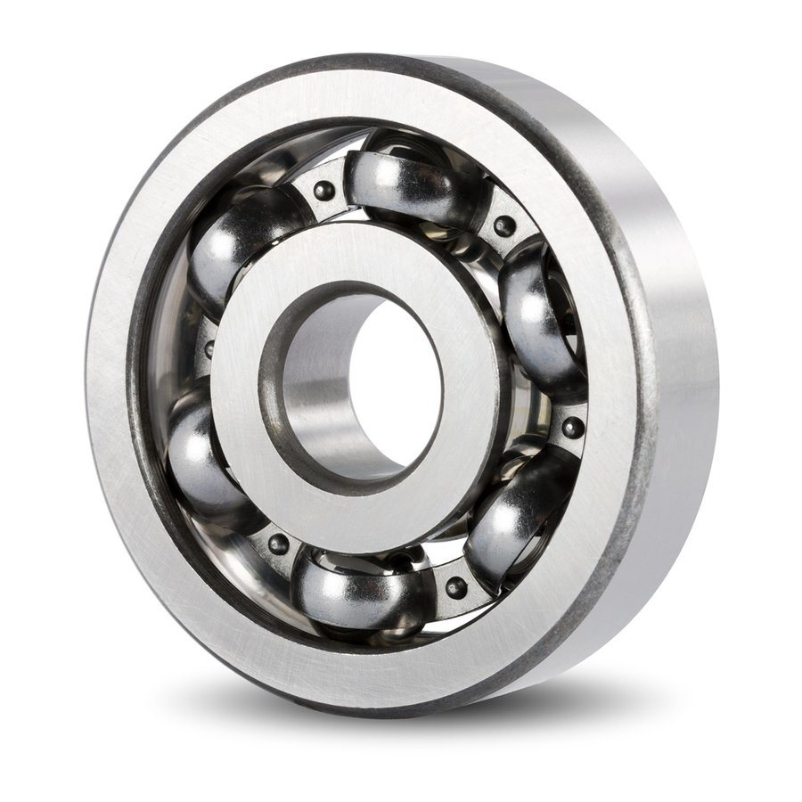
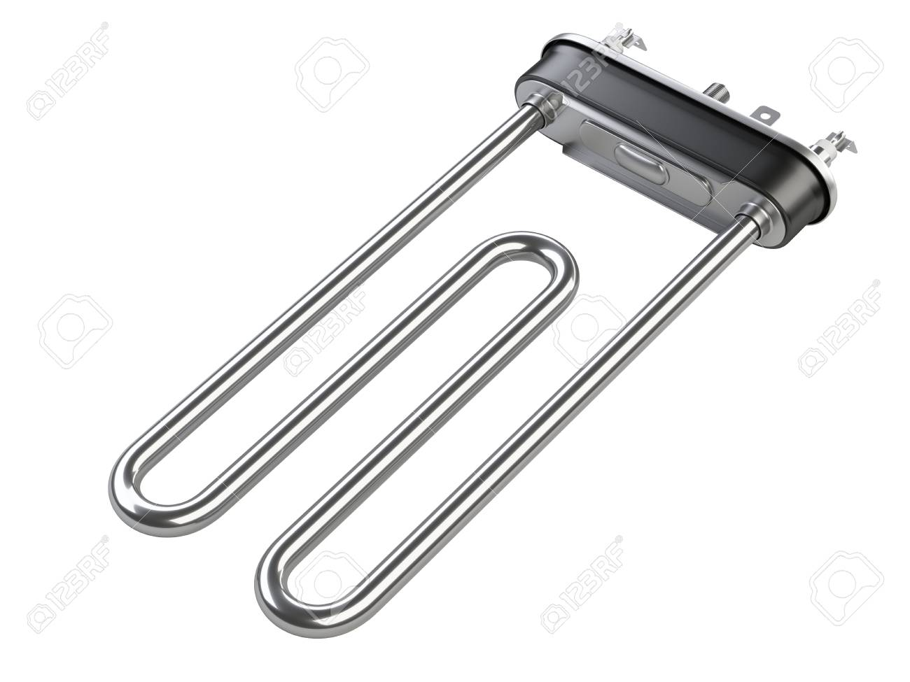
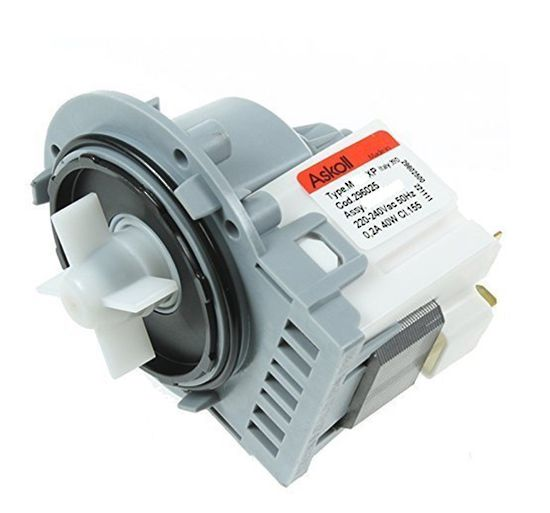
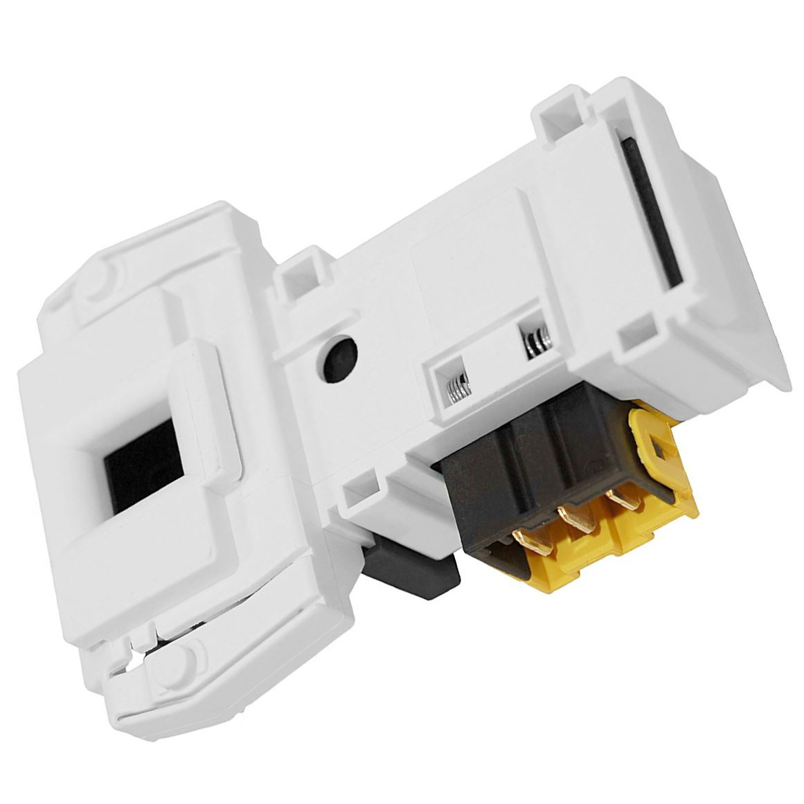
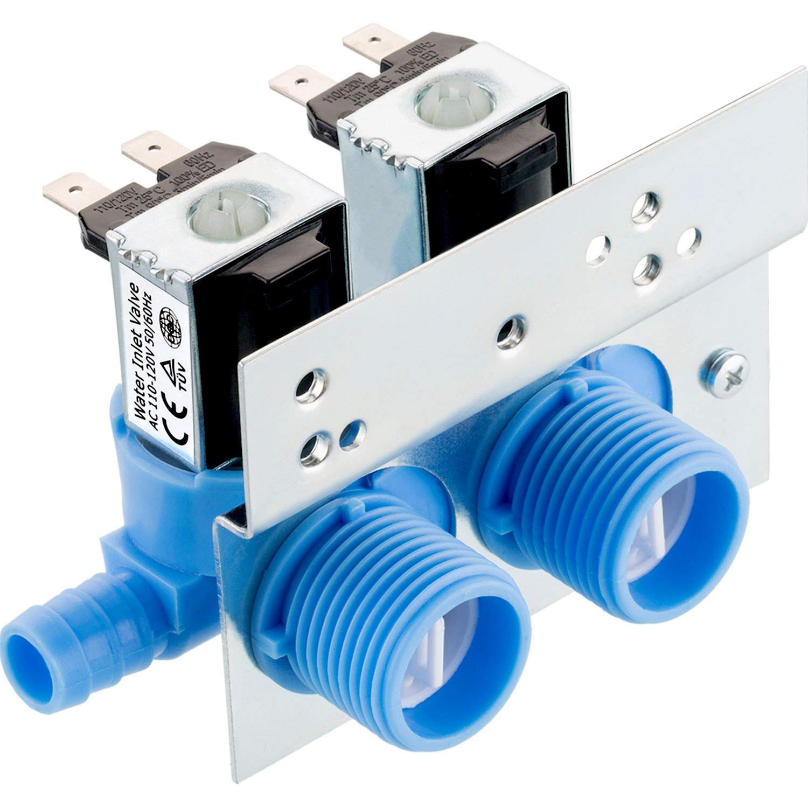
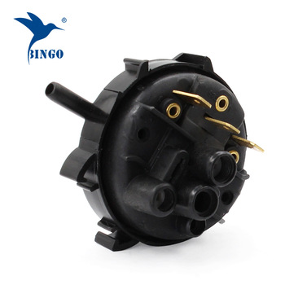
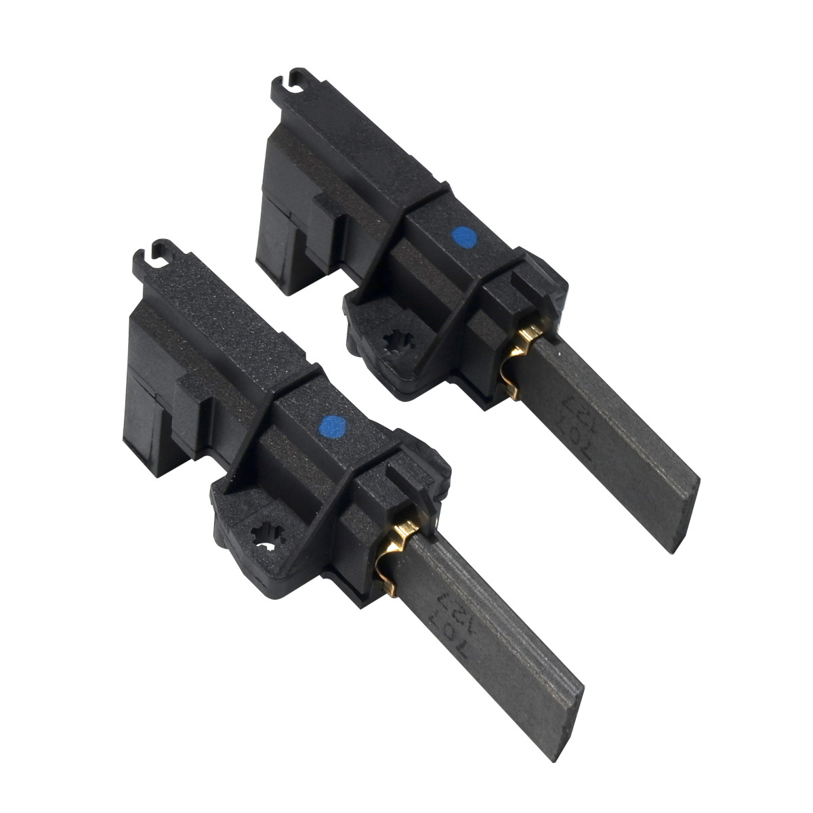

ВИДЫ НЕИСПРАВНОСТЕЙ
- Стиральная машина не включается.
- Мигают индикаторы.
- Двигатель не работает.
- После включения стиральной машины двигатель гудит, но не вращает барабан.
- Барабан вращается только в одну сторону.
- Двигатель во время стирки вращается только на повышенных или только на пониженных оборотах.
- В бак не поступает вода или поступает слишком много воды.
- Стиральная машина не сливает воду.
- Стиральная машина не отжимает белье.
- Срабатывает автомат защиты, выбивает пробки.

- Сильный шум при вращении барабана.
- Наличие ржавчины на барабане, утечка воды.
- Появляется повышенная вибрация корпуса во время стирки.
- При ручном прокручивании барабан движется с заеданиями, трением, имеется люфт.
- Клинит и вообще не вращается барабан.

Тэн
(нагревательный элемент)
- Машина не греет воду.
- Стиральная машина не отжимает.
- Мигают индикаторы стиральной машины.
- Стиральная машина не заканчивает программу.
- Программы переключаются сами по себе.
- Стиральная машина долго стирает.
- Машина зависает на одном времени.

- Машина не сливает воду или сливает но не при каждой стирке.
- Программа стирки останавливается на этапе слива.
- Стиральная машина гудит при сливе воды.
- Блокировка режима отжима после слива воды из бака.
- Стиральная машина не переходит в режим отжима.

- Люк не открывается (блокирование дверки даже после окончания программы стирки).
- После нажатия кнопки «Старт» дверца не блокируется, программа стирки не запускается.
- Стиральная машина не включается.

- Стиральная машина не набирает воду.
- В бак поступает слишком много воды.
- Вода поступает в бак даже при отключенной машинке.

Прессостат
(датчик уровня воды)
- Вода не поступает в бак.
- Стиральная машина набирает слишком много воды.
- Машина начинает заливать воду, а затем сразу же ее сливает.
- Машина стирает, но не отжимает.

Щетки
(скользящие контакты)
- Стиральная машина не отжимает белье.
- Стиральная машина искрит.
- Двигатель гудит, но не крутит барабан.
- Стиральная машина не включается.